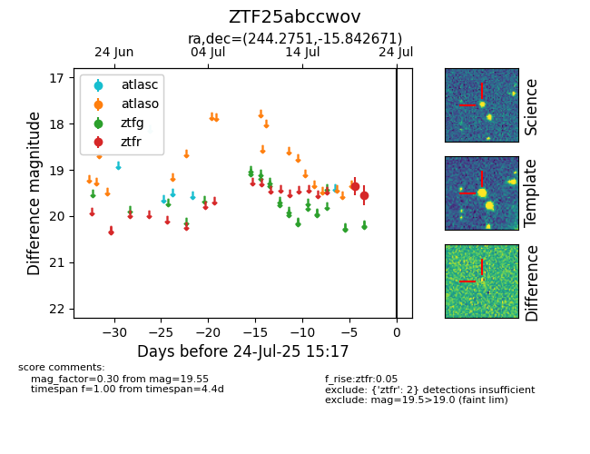

Target ZTF25abccwov at 2025-07-24 15:17, see:
FINK: fink-portal.org/ZTF25abccwov
Lasair: lasair-ztf.lsst.ac.uk/objects/ZTF25abccwov
ALeRCE: alerce.online/object/ZTF25abccwov
alt names
ZTF25abccwov (ztf,fink)
coordinates:
equatorial (ra, dec) = (244.2751,-15.84267)
galactic (l, b) = (358.4470,+24.17279)
photometry
last ztfr=19.55
2 ztfr detections
